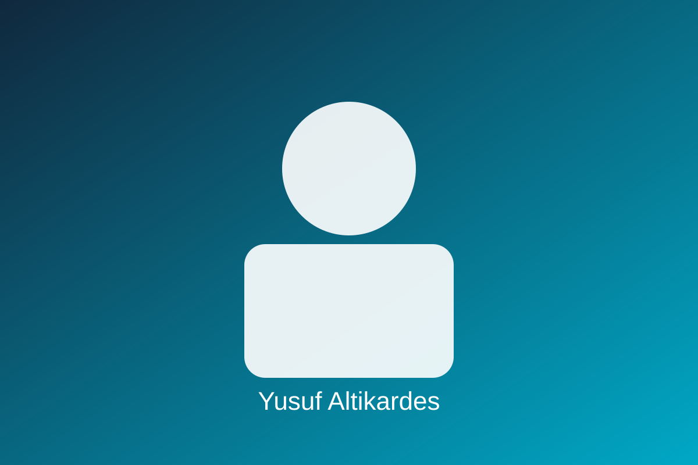
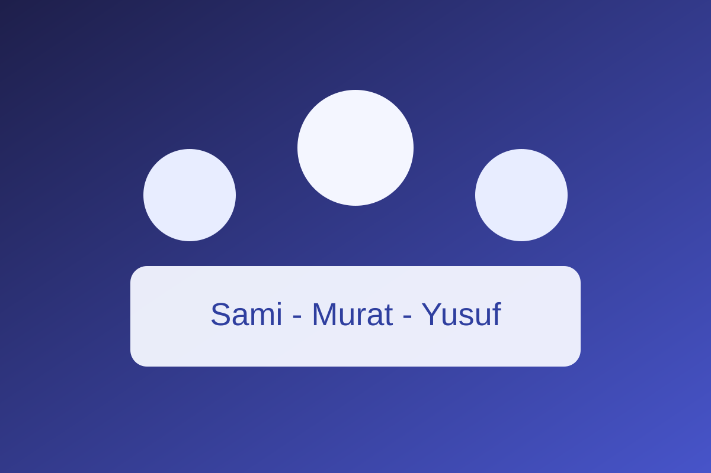

Doğum ve İlk Yıllar
Sami Pehlivan, dönemin Yugoslavya'sına bağlı Makedonya bölgesinde dünyaya geldi. Çocukluğu kırsal Balkan kültürü ve güçlü aile bağları içinde geçti.
Nesiller Boyu Güreş Mirası
Bu sayfa, merhum milli sporcu Sami Pehlivan ile başlayan ve bugün Murat Pehlivan ve Yusuf Altıkardeş ile devam eden aile geleneğini anlatır.
Sami Pehlivan, dönemin Yugoslavya'sına bağlı Makedonya bölgesinde dünyaya geldi. Çocukluğu kırsal Balkan kültürü ve güçlü aile bağları içinde geçti.
Üsküp'teki seçmelerde yeteneğini ortaya koydu; köy meydanlarından resmi müsabakalara geçerek spor hayatında yeni bir dönem açtı.
Ailesiyle Türkiye'ye taşındı ve Bayrampaşa'ya yerleşti. Sümerspor çatısı altında disiplinli bir kariyer inşa etti.
Tunus'ta serbest stil 63 kg kategorisinde altın madalya kazanarak Türk güreş tarihine adını yazdırdı.
24 Ekim 2020'de aramızdan ayrıldı; arkasında sporla örülmüş güçlü bir karakter ve ilham veren bir aile mirası bıraktı.
Sami Pehlivan'ın açtığı yol, bugün ailede yeni nesiller tarafından yaşatılıyor. Aşağıdaki görselleri dilediğinde kendi fotoğraflarınızla kolayca değiştirebilirsin.
Yaşayan Güreşçi
Ailenin yaşayan güreş temsilcilerinden Murat Pehlivan, disiplini ve istikrarı ile gelenekten aldığı gücü yeni kuşaklara aktarmaktadır.

Genç Nesil Güreşçi
Aile mirasının yeni halkası olan Yusuf Altıkardeş, modern antrenman yaklaşımı ile güreşi bugünün şartlarında sürdürerek hikayeyi geleceğe taşımaktadır.
Bu hikaye yalnızca bir spor başarıları listesi değil; göçle yoğrulmuş, emekle büyümüş ve aile dayanışmasıyla güçlenmiş bir yaşam yolculuğudur.
Pehlivan ailesinin güreş mirası, geçmişin saygısını ve geleceğin heyecanını aynı çizgide buluşturur.
